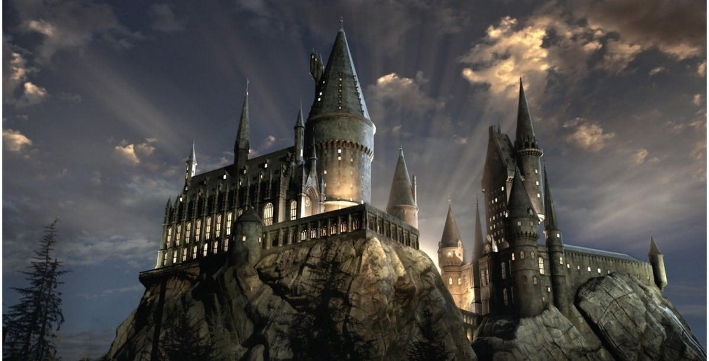

post #1
Harry James Potter nasceu em Godric Hollow em 31 de julho de 1980, mais conhecido como Harry Potter. Ele é um bruxo, filho único de Tiago Potter e Lílian Evans Potter, considerado um dos mais famosos bruxos dos tempos modernos e o aluno mais famoso da Escola de Magia e Bruxaria de Hogwarts. Ficou famoso por ter sido o único sobrevivente da Maldição da Morte, quando Lord Voldemort tentou assassiná-lo ainda bebê. Sua lembrança deste dia é uma cicatriz que ficou em sua testa, em formato de raio. Harry teve uma infância difícil, pois perdeu os pais ainda bebê, assassinados por Lord Voldemort. Ao fim da Primeira Guerra Bruxa, Harry foi morar com seus parentes trouxas, os Dursley, sem qualquer tipo de contato com o mundo bruxo até seus 11 anos, quando passou a receber cartas da Escola de Magia e Bruxaria de Hogwarts e Rúbeo Hagrid lhe contou que seus pais eram bruxos. A partir de então, Harry passou a aprender sobre sua história e o mundo bruxo. Ingressou em Hogwarts e logo foi selecionado para fazer parte da Grifinória, juntamente com Rony Weasley e Hermione Granger, que mais tarde tornariam-se seus melhores amigos. Na escola, tornou-se apanhador na equipe de Quadribol, sendo o mais jovem a ocupar a posição em mais de 100 anos de história. Com a ajuda de seus amigos, enfrentou diversos desafios durante a adolescência, vários deles contra Lord Voldemort, como por exemplo impedindo o vilão de possuir a Pedra Filosofal, logo no primeiro ano.Descubra mais sobre: